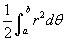
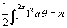
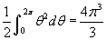
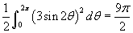

This device cannot display Java animations. The above is a substitute static image
1. A Circle
The applet initially shows a circle defined using the polar equation r = 1. We know from geometry that the area of this circle is π. We can approximate the area using sectors, one of which is shown in gray. Move the th slider (th is used instead of θ to make it easier to type in polar functions) to see the sector move.
The area of a sector of width dθ and radius r is ½ r² dθ. If we add up a bunch of sectors to approximate the area enclosed by a polar curve and let dθ go to zero, we get the integral

where
r is replaced by our polar equation in terms of
θ. For this example, the integral is

One thing to note about polar area is that
a should be less than
b, just like for arc length (otherwise, the integral gives a negative area). The other caution is that the integral doesn't yield quite the right answer if the curve overlaps itself, or if some of the area enclosed is covered more than once.
For example, if you set b to 4pi by typing in the b input box, the area shown is twice what it should be. That's because you only need θ to go from 0 to 2π to cover the circle; if θ goes from 0 to 4π, it goes around twice and covers the circle twice.
2. A Spiral
Select the second example from the drop down menu, showing a spiral defined as r = θ . Move the th slider to see the sector move, noticing that in this case the radius is not constant, but changes as θ changes. The integral in this case is

Move the
b slider to change the upper limit and notice what area is shaded in yellow. Unlike area under regular curves, where the edges of the yellow area is parallel to the
y axis, here the boundaries of the area are lines through the origin.
3. A Rose
Select the third example, showing a rose. You can move the th slider to get a feel for how the sectors are added up. The integral in this case is

Explore
You can try other polar equations by typing the definition in (using th for θ), setting a and b as desired, and zooming/panning. Note that you need to figure out what a and b are to only sweep out the area of interest once, to avoid double counting (use the sliders to help see where this is; if you need to set a or b beyond the range of 0 to 2π, use the a and b input boxes instead of the sliders).
Other 'Applications of Integration' topics
(C) 2011 Copyright Math Open Reference.
All rights reserved